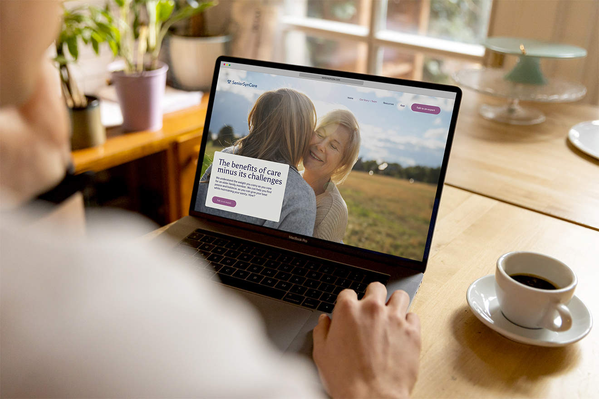
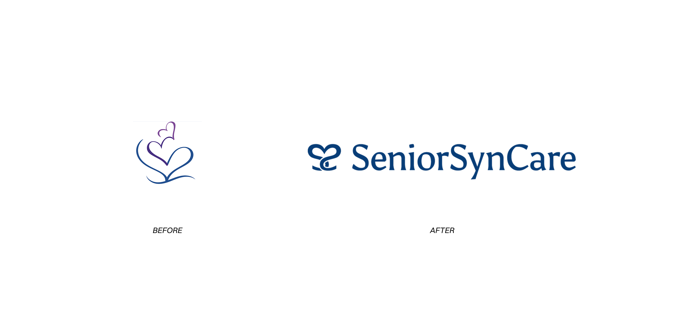
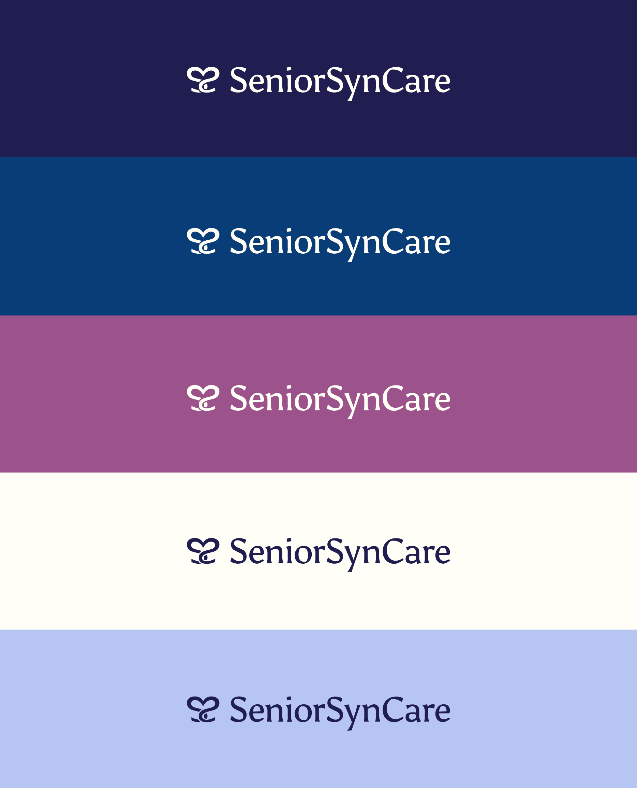
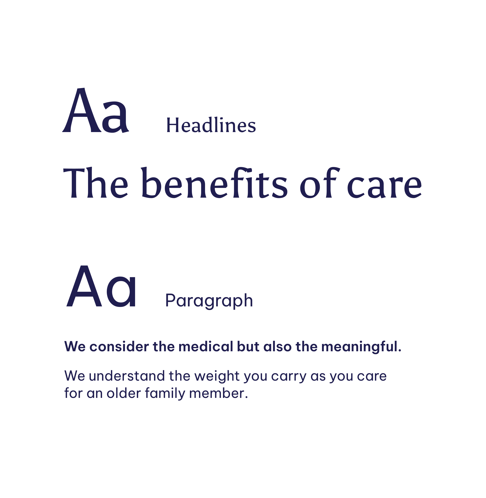
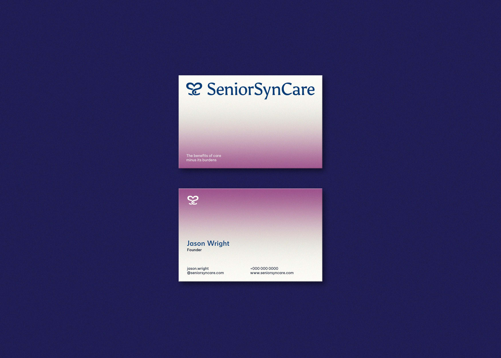
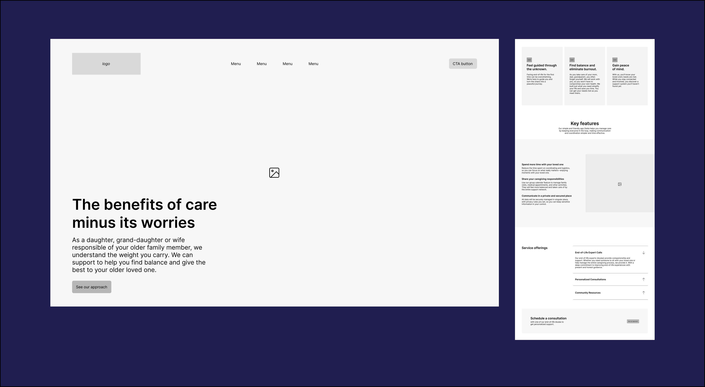
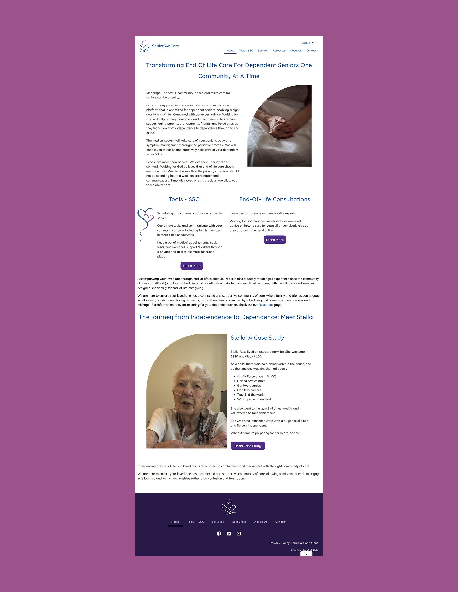
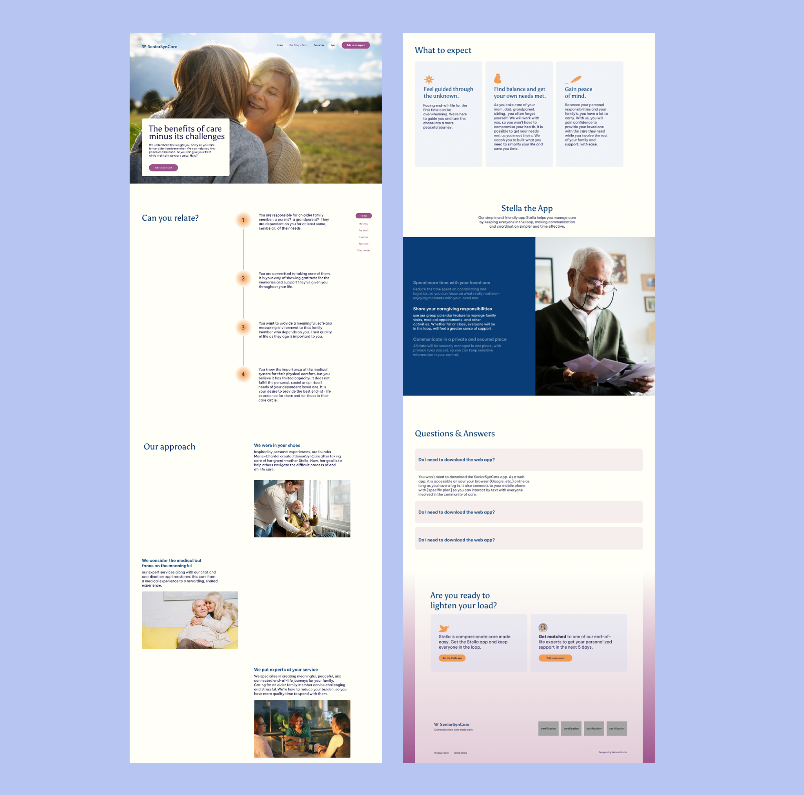
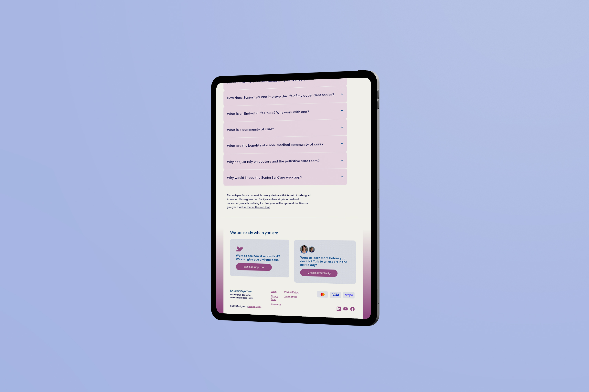
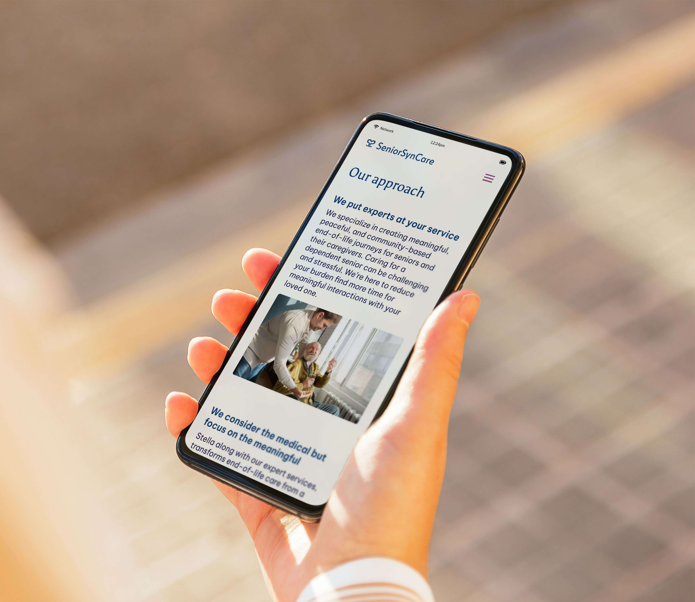

Seniorsyncare
Brand Identity & Website Redesign
Introduction
SeniorSynCare is an end-of-life care company providing the tools, services, and education necessary for a meaningful, peaceful, and community-based experience for seniors and their families. They came to us for a complete brand and website redesign.

Photo Credit: Ruixin Tian
Tools
Illustrator, Photoshop, Figma, Wix
Deliverables
Brand Identity System, Website Redesign
Keywords
Compassionate, Experienced, Reliable
Year
2023-2024
The Challenge
SeniorSynCare was founded from a deeply personal place: one co-founder began coordinating care for their own grandmother in her final days and recognised how fragmented the process could be. The app they built to centralise care scheduling and community coordination grew into something they wanted to share publicly. The brand needed to carry that origin story with sensitivity: warm enough to earn trust from families in one of life's most vulnerable moments, while professional enough to stand alongside established care providers.



The Process
Stylescapes established the visual direction before any design work began, grounding the client's preferences in a concrete aesthetic language. The existing logo was of three hearts representing the company, caregivers, and seniors, was the right foundation, but needed refinement.
The redesigned mark takes that symbolism further. Two letter Ss, one reversed, form a dual image: a heart and two swans facing each other. It keeps the original heart at its core while layering in the swan song, the ancient belief that swans sing their most beautiful song just before passing.
The colour palette honours the client's wish to retain purple alongside blue, a sentimental connection to the co-founder's grandmother. The overall direction landed on minimal and clear: nothing that would feel clinical, nothing that would feel mournful.

The Solution
The resulting identity is gentle but grounded, a system that communicates reliability without feeling institutional. The swan mark, the soft palette, and the clean typographic system work together to give SeniorSynCare a presence that families can trust and caregivers can stand behind.

Wireframe


The Reflection
This project taught me how to take the reins. Working under time constraints meant there wasn't always the luxury of extended back-and-forth — at some point, the designer has to make the call and commit to it. Learning to trust that instinct, and to own the outcome, was as valuable as anything else I took from this project.

